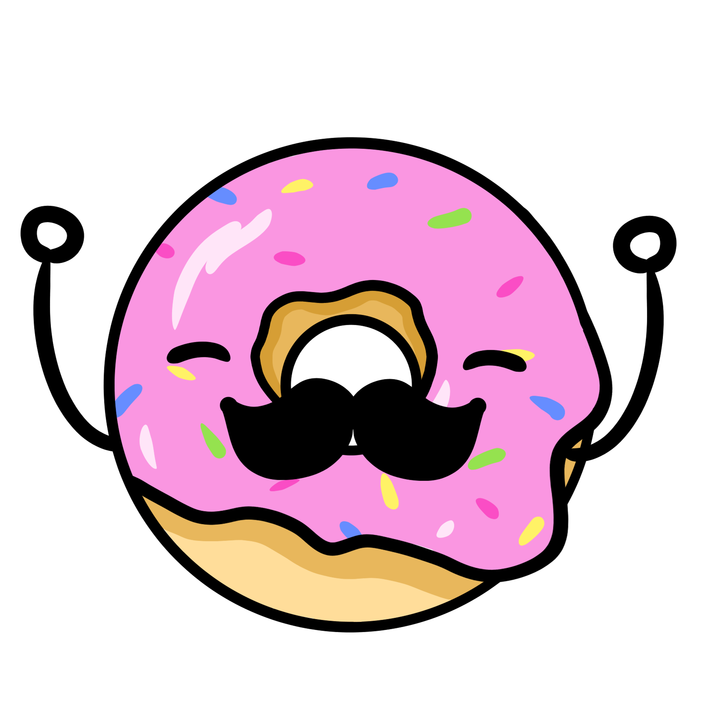

Projects
Research on Climate

Programmed in a team to explore using emulators to predict the future from different socioeconomic shared pathways. Furthered our research to determine uncertainty levels for natural disasters in high impact areas.
See More

Big O Explained

Programmed in a team to create an interactive visualization that would explain Big O Notation to new coders using Python and graphs. Allowed website use for lower division data science classes.
See More
Water Quality & Socioeconomic Status in CA
Explore relationship between socioeconomic factors, race, and water quality in California. Found socioeconomic factors affect water quality!
View Paper
Investigating Abortion Rates
Explore how abortion rates changed in response to representation of female politicians, access to OB/GYN care, and income level. Worked with a team to find income level has little influence, OB/GYN rate has some influence, and women in government has a high influence.
See More
LoL Model Building
Pair programmed to identify a binary classification problem, create a baseline predictive model using two features, and create an improved predictive model using six features and hyper parameters.
See More
LoL Soul Analysis
Pair programmed to clean a DataFrame, used permutation tests to analyze missingness and missingness dependency, and created hypothesis tests to learn about the distribution of data.
See More